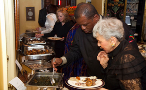
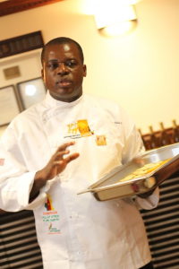
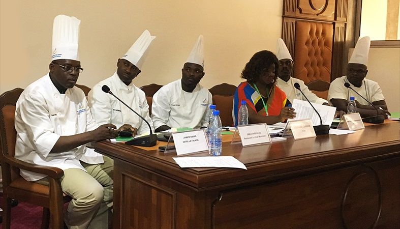

Chef Emile Engoulou
Chef Engoulou is a renowned chef in Cameroon. He is the owner and chef of the Yaounde Municipal restaurant, a large restaurant in the Yaounde Urban Community. He is the Chef-Nutritionist of the Indomitable Lions Junior and Cadet (Cameroon National Football Team). He is also the President of the Association of Chefs Cooks and Pastry Chefs of Cameroon, among other inter-professional responsibilities. He has a long experience in the field.
Could you retrace your career as Chef Cook and how did this interest in cooking come to you?
The kitchen is a little late vocation at home. My dream of departure is to be a competent Manager and accomplished trades of the hotel industry. So at the end of my studies, my first position in the company was Director of Foodservice, then Operations Manager, and General Manager when I then started my business ....
It is after a first career as a hotel administrator that I hear the call of the kitchen. Ished ished exclusive exclusive exclusive exclusive exclusive exclusive exclusive exclusive exclusive,,,,,,,, I I I I I I I I I I I I I I I I I I I I I I I I I I I I.

Cameroonian cuisine is known for its richness, diversity and quality. What do you think are the opportunities she could have sixteen?
The globalization currently underway is a great deal of ease in terms of partnerships and a large pool of efforts. The Chefs 4 development initiative is a great opportunity for Cameroonian cooks to learn from the experience of others in the world, and the opportunity to show them how to do so. environment offers, and their cultural heritage. So it's a real opportunity.


You are the President of the Association of Chefs Cooks and Pastry Chefs of Cameroon, which brings together the most important hotel establishments of the country. Could you tell us more about the local activities and local cuisine and links to local producers and processors?
Promoting local cuisine is one of our statutory goals. Each Chef is particularly involved in the control of food in the region where he officiates and our meetings are often an opportunity to pool to harmonize, the progress of each other. We started a process of codification of heritage recipes to change traditional recipes into recipes that ensure the long-lasting taste of each region.
There are many processes in the world and they are able to develop a dialogue that can achieve the quality objectives expected by consumers.
Do you think chefs have more gastronomic tourism locally, regionally and internationally?
The role of chefs is cardinal, whatever the level that one evokes. They are the cornerstone of gastronomy. They are therefore important throughout the process. Their demands influence producers and lead to improved production and efficient profitability; Heads are also favored to increase the quantities produced, with each product being valued.

Learn more
- Heads of Development Initiative in Central Africa Interview with Marie Joseph Medzeme Engama http://bit.ly/2y5iANV Development in Central Africa
of Marie Joseph Medzeme Engama
- The Heads of Development Platform arrives in Central Africa http://bit.ly/2hICXw0 Development arrives in Central Africa
- "A Night In Cameroon" Los Angeles Art & Culture Enthusiasts Celebrate African Traditions From Cameroon
http://bit.ly/2ycjFDy
- A Night in Cameroon: Celebrating Africa in Miniature with Her Excellency Ama Tutu Muna, Cameroon's Minister of Culture, Hosted by the Leon H Sullivan Foundation, March 30th in Chevy Chase, Maryland
http://conta.cc/2fZW9S6